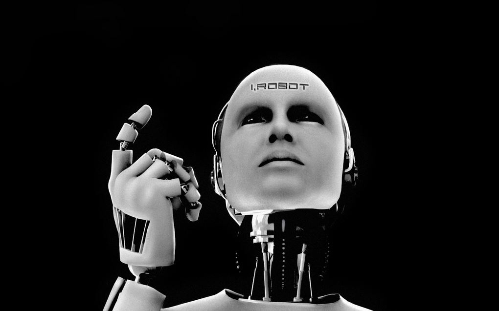

Implementación de un sistema domótico
OBJETIVO GENERAL
Facilitar procesos que se realizan constantemente en el hogar y efectuarlos de una manera más eficiente.
OBJETIVOS ESPECÌFICOS
La aplicación de la domótica, facilita la interacción entre los individuos y los dispositivos presentes en los hogares. Esto significa menor esfuerzo y mayor facilidad al interactuar con los dispositivos, esto conlleva a la comodidad de las personas. Sin embargo, también es posible reducir costos y que la operación de los sistemas sea más eficiente y eficaz. Por consiguiente tenemos ahorro de energía. Podemos agregar el hecho de que sería posible la telecomunicación con dispositivos en el hogar. Es un campo muy amplio con mucho futuro. SE CONSIDERA interesante este tema por la gran cantidad de aplicaciones e influencia que tiene en la vida cotidiana.
insertar